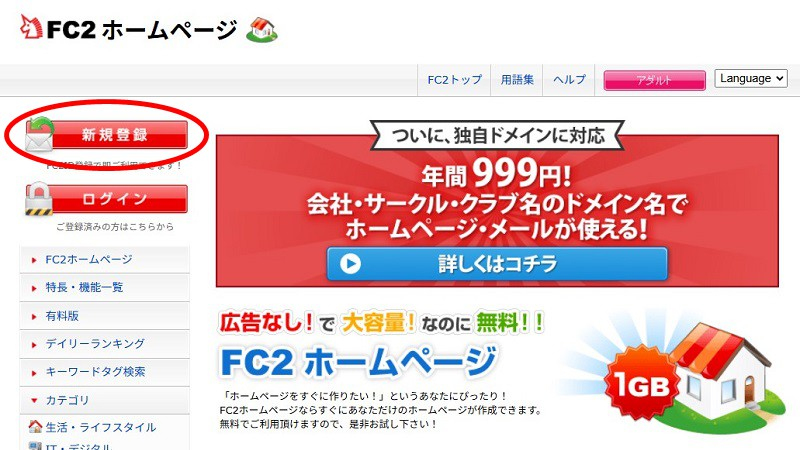
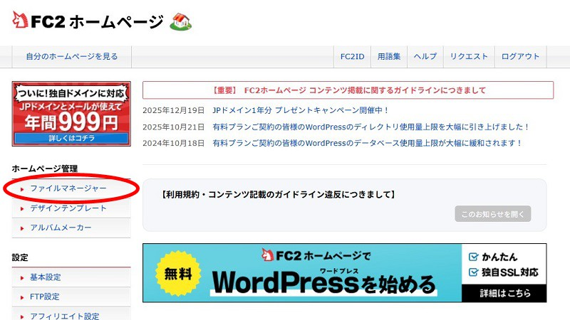
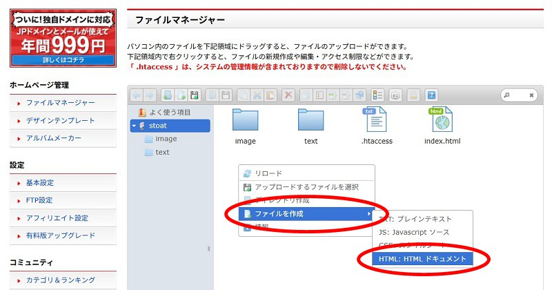
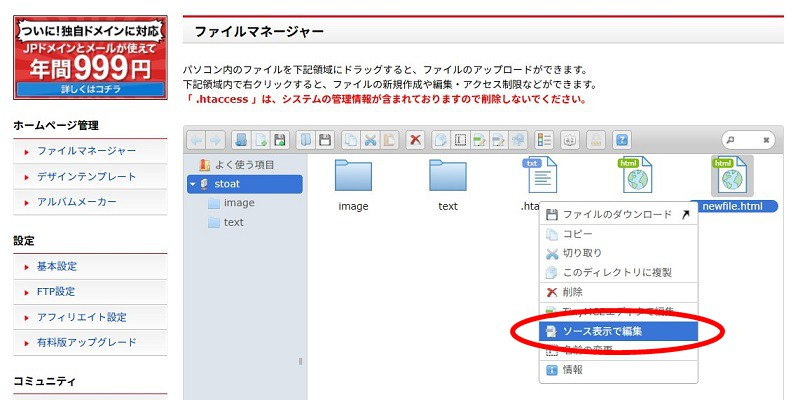
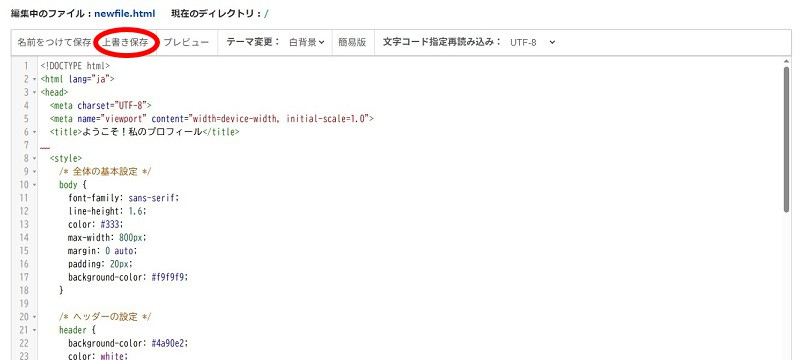
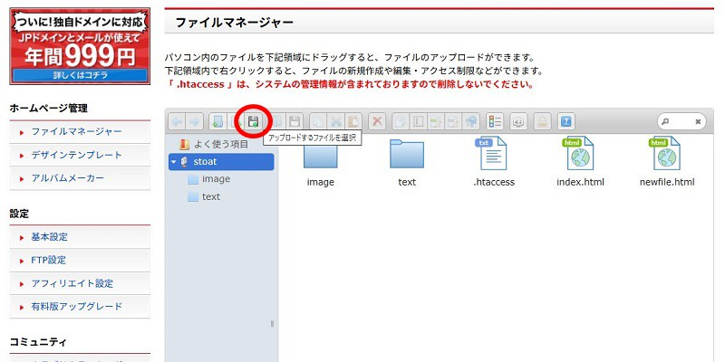
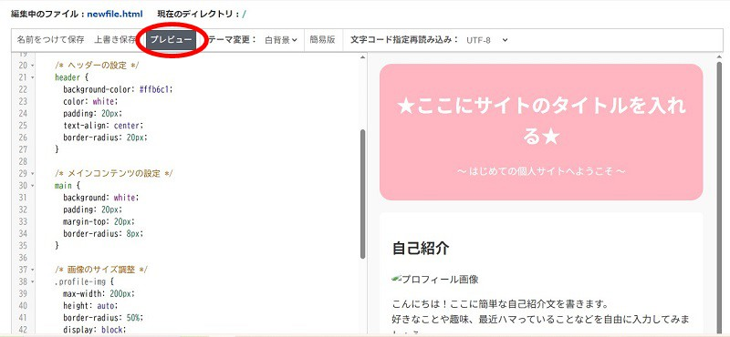

エディタもFTPも不要！ブラウザひとつで自分のホームページを作ってみよう
Webサイト制作と聞くと「特別なソフト（エディタ）を入れたり、FTPソフトでファイルを転送したり…」と難しく感じてしまうかもしれません。
ですが、FC2ホームページの標準機能を使えば、ブラウザひとつで簡単に個人サイトを作成・公開できます！
このページでは、ブラウザ上でコードを編集しながらWebサイトを作る手順を具体的に解説していきます🐾
FC2の公式サイトを開き、「新規登録」ボタンからFC2 IDを作成します。登録完了後、FC2ホームページの管理画面にログインします。

管理画面の左メニューにある「ファイルマネージャー」をクリックします。

ファイルマネージャーの画面上で右クリックをし、「ファイルを作成」を選択します。ファイル形式の選択画面が出たら「HTML」を選びます。

デフォルトで「newfile.html」と入力されているので、そのまま決定します。
index.html
というファイル名にする必要があります（それによってサーバーが自動的にトップページだと認識してくれます）作成された「newfile.html」を右クリックし、「ソース表示で編集」を選択します。別ウィンドウで編集画面が開きます。

<>の閉じ忘れがあると赤色で表示」「リアルタイムでプレビューできる機能」など、編集に便利な機能が付いています🐾
練習用のコードを作成したのでコピーしてご利用ください🐾
<!DOCTYPE html>
<html lang="ja">
<head>
<meta charset="UTF-8">
<meta name="viewport" content="width=device-width, initial-scale=1.0">
<title>ようこそ！私のプロフィール</title>
<style>
/* 全体の基本設定 */
body {
font-family: sans-serif;
line-height: 1.6;
color: #333;
max-width: 800px;
margin: 0 auto;
padding: 20px;
background-color: #f9f9f9;
}
/* ヘッダーの設定 */
header {
background-color: #4a90e2;
color: white;
padding: 20px;
text-align: center;
border-radius: 8px;
}
/* メインコンテンツの設定 */
main {
background: white;
padding: 20px;
margin-top: 20px;
border-radius: 8px;
}
/* 画像のサイズ調整 */
.profile-img {
max-width: 200px;
height: auto;
border-radius: 50%;
display: block;
margin: 10px 0;
}
/* リンクの装飾 */
a {
color: #4a90e2;
text-decoration: none;
}
a:hover {
text-decoration: underline;
}
/* フッターの設定 */
footer {
text-align: center;
margin-top: 20px;
font-size: 0.9em;
color: #666;
}
</style>
</head>
<body>
<!-- 1. ヘッダー領域 -->
<header>
<h1>★ここにサイトのタイトルを入れる★</h1>
<p>～ はじめての個人サイトへようこそ ～</p>
</header>
<main>
<!-- 2. プロフィール -->
<section>
<h2>自己紹介</h2>
<img src="https://via.placeholder.com/200" alt="プロフィール画像" class="profile-img">
<p>
こんにちは！ここに簡単な自己紹介文を書きます。<br>
好きなことや趣味、最近ハマっていることなどを自由に入力してみましょう。
</p>
</section>
<!-- 3. 箇条書きリスト -->
<section>
<h2>好きなものリスト</h2>
<ul>
<li>読書（ミステリー小説）</li>
<li>カフェ巡り</li>
<li>Webサイト制作</li>
</ul>
</section>
<!-- 4. リンクの追加 -->
<section>
<h2>お気に入りリンク</h2>
<p>良く使うWebサイトや、SNSへのリンクを設定してみましょう。</p>
<ul>
<li><a href="https://example.com" target="_blank" rel="noopener">お気に入りのサイト（新しいタブで開く）</a></li>
<li><a href="#top">ページの先頭へ戻る（ページ内リンク）</a></li>
</ul>
</section>
</main>
<!-- 5. フッター領域 -->
<footer>
<p>© 2026 あなたのお名前. All Rights Reserved.</p>
</footer>
</body>
</html>編集画面は最初は真っ白なので、上の「練習用デモコード」をコピーしてそのまま貼り付けます。その後、左上の「上書き保存」を押していったん保存しておきましょう。

編集画面の6行目あたりに、以下の記述があります。
<title>ようこそ！私のプロフィール</title>
<title> と
</title>
の間にある文字が、ブラウザの「タブ」に表示されるページ名になります。
ポインタを移動させて、「メモ帳」で文章を編集するようにお好みのタイトルに書き換えてみましょう！
画面を下にスクロールしていくと、<body>
タグの中に実際のページに表示される文章が書かれています。
69行目付近にある以下の部分を探してみましょう。
<!-- 1. ヘッダー領域（テキストの編集を試す） -->
<header>
<h1>★ここにサイトのタイトルを入れる★</h1>
<p>～ はじめての個人サイトへようこそ ～</p>
</header><!-- と --> について<!-- と
-->
で囲まれた文字は「コメント」と呼ばれ、実際のページには表示されません。自分用のメモや解説文として使われます🐾
<h1> タグ：
ページ内で最も重要な「大見出し」を表します。サイト名やページの題名に使いましょう。
<p> タグ： 文章の「段落」を表します。文章を入力して
</p> で閉じることで、ひとまとまりの段落として表示されます。
「★ここにサイトのタイトルを入れる★」の部分を自分のサイト名に書き換えてみましょう！
さらに下の行にある「自己紹介」や「好きなものリスト」のテキストも、同じように好きな文章に書き換えてみてください。
<ul> と <li> タグ：
箇条書きリストを作成するタグです。<li>項目</li>
を増やすことで、リストの項目を増やすことができます。
お気に入りのサイトやSNSへのリンクを設定してみましょう。
<!-- 練習ポイント: target="_blank" の意味や href の書き方 -->
<li><a href="https://example.com" target="_blank" rel="noopener">お気に入りのサイト（新しいタブで開く）</a></li>href="..." ： 移動先のWebサイトのURLを入力します。
target="_blank" ：
この記述を入れておくと、リンクをクリックしたときに「新しいタブ」で開くようになります。
ご自分のX（旧Twitter）アカウントや、お気に入りのサイトのURL（https://...）に書き換えてみましょう！
サイトに自分の好きな画像を掲載してみましょう。
ファイルマネージャー画面の左上にある 💾（フロッピーディスク）のアイコン をクリックします（マウスを重ねると「アップロードするファイルを選択」と表示されます）

ドロップエリアが表示されるので、パソコン内にある画像ファイル（例：profile.jpg）をドラッグ＆ドロップします。一覧に画像ファイルが追加されればアップロード完了です！
HTML編集画面に戻り、画像を表示している以下のコードを探します。
<img src="https://via.placeholder.com/200" alt="プロフィール画像" class="profile-img">src="..." ：
表示したい画像ファイルの名前を指定します。先ほどアップロードした画像ファイル名（例:
profile.jpg）に変更します。
alt="..." ：
画像が表示されない場合に代わりに表示される説明文（または音声読み上げ用）です。
<!-- 書き換え例 -->
<img src="profile.jpg" alt="私のイラスト" class="profile-img">
コードの上部（10〜62行目あたり）にある <style> 〜
</style>
の間には、デザインを整える「CSS」が書かれています。少し数値を変更するだけで、サイトの雰囲気が一変します！
header { background-color: #4a90e2; }
のカラーコード（#4a90e2）を、好きな色のコード（例: ピンクなら
#ffb6c1 など）に変えてみましょう。
border-radius: 8px; の数値を 0px にすると四角く、20px
にするとより丸みを帯びたデザインになります。
編集画面の上側にある「プレビュー」をクリックすると、現在の見映えを確認できます。全画面で確認したい場合はいったん「上書き保存」をし、該当ファイルをダブルクリックで開きましょう。

デザインや文章が完成したら、いよいよ世界中に公開しましょう！
編集画面の左上にある 「上書き保存」 をクリックします。
ファイルマネージャーに戻り、「newfile.html」を右クリックして
「名前を変更」 を選択し、index.html に変更します。
index.html と入力した結果 index.html.html という名前になってしまい、トップページとして正しく読み込まれないことがあります🐾
これで、あなたの個人サイトが公開されました！
保存したファイルをダブルクリックすると実際のページ開くので、正しく表示されるか確認してみましょう。
Ctrl + F5（Macは Cmd + Shift + R）今回はFC2のブラウザ機能のみで完結させましたが、自分のパソコンのエディタソフトで作成した場合も、出来上がったHTMLファイルを「手順5：画像のアップロード」と同じやり方でドラッグ＆ドロップすればWebページとして公開できます🐾
ホスティングサービスの機能によっては、特別なツールを使わなくてもブラウザの管理画面だけでWebサイトを作ることができます。
ぜひ自分だけの素敵なWebサイトを作ってみてくださいね🐾